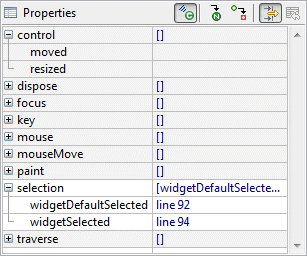
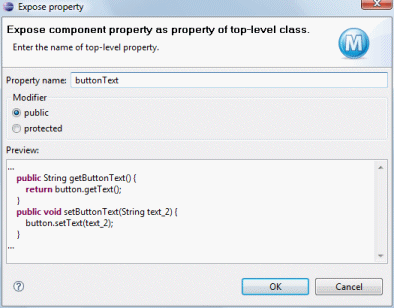
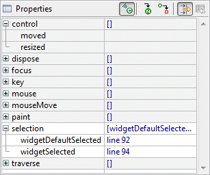
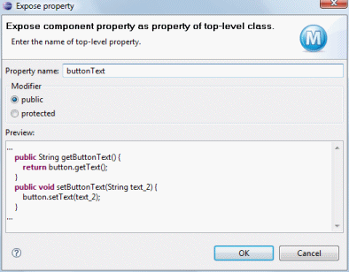

Icon
Command Name
Description


Icon |
Command Name |
Description |
|
|
Show events |
Show the events defined for the component. Expand a event category to see
the individual events. Double-click on an event to generate a default
event handler and switch to the Source view..  |
|
|
Goto Definition | Switch to the Source view and place the cursor on the line where the selected control is instantiated. |
| Convert local to field | Convert the currently selected components from local variables to fields. | |
| Convert field to local | Convert the currently selected components from fields to local variables. | |
|
|
Show advanced properties | Show advanced properties in italics. |
|
|
Restore default value | Revert the selected property to its default value. |
| Expose property... |
Add a public or protected accessor for the selected property. Components exposed in
superclasses
or in embedded panels can be selected and edited by the user.
 |
|
| Use default category | Restore the selected property to its default category. | |
| Mark as preferred | Mark the selected property as preferred so that it shows up in bold. | |
| Mark as normal | Mark the selected property as normal. | |
| Mark as advanced | Mark the selected property as advanced so that it shows up in italics. |